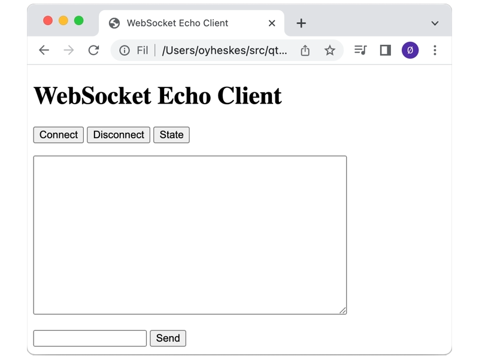

Secure WebSocket Echo Server
A simple server to respond to clients over secure WebSockets (wss).
The Secure WebSocket Echo Server example shows how to use the QWebSocketServer class to implement a simple echo server over secure sockets (wss). TLS support is required for this example to work. It authenticates itself to the client and, on success, can accept a message from the client, to which it responds. For the sake of illustration, its response is simply a copy of the message it was sent.
This server is configured with a self-signed certificate and key. Unless the clients contacting this server is configured to trust that certificate, which Secure WebSocket Echo Client does, they will reject this server.

There is an HTML-based client as part of this example. But it will only work either if the browser used supports the certificate as described above, or if it ignores TLS errors for localhost addresses.
See also Secure WebSocket Echo Client and WebSocket Echo Server.